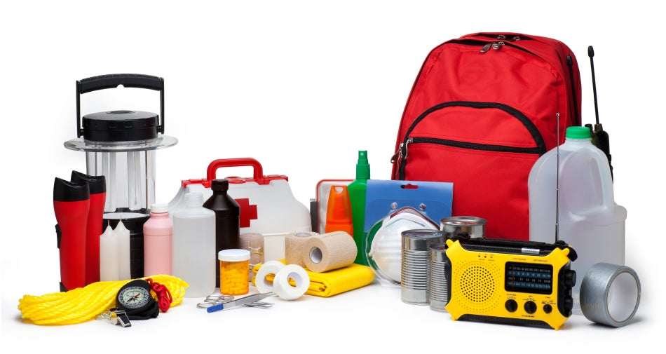

A well equipped kit can be a life saver during a sudden disaster

A disaster supplies kit is a collection of basic items your household may need in the event of an emergency.
Basic Disaster Supplies Kit
Water (one gallon per person per day for at least three days, for drinking and sanitation)
Food (at least a three-day supply of non-perishable food)
Battery-powered or hand crank radio and a NOAA Weather Radio with tone alert
Flashlight
First aid kit
Extra batteries
Whistle (to signal for help)
Dust mask (to help filter contaminated air)
Plastic sheeting and duct tape (to shelter in place)
Moist towelettes, garbage bags and plastic ties (for personal sanitation)
Wrench or pliers
Manual can opener (for food)
Local maps
Cell phone with chargers and a backup battery
Store kit items in airtight plastic bags
Additional Emergency Supplies
Masks (for everyone ages 2 and above), soap, hand sanitizer, disinfecting wipes to disinfect surfaces
Prescription Medicines, Non-prescription medications such as pain relievers, anti-diarrhea medication, antacids or laxatives
Prescription eyeglasses and contact lens solution
Infant formula, bottles, diapers, wipes and diaper rash cream
Pet food and extra water for your pet
Important family documents such as copies of insurance policies, identification and bank account records saved electronically or in a waterproof, portable container
Sleeping bag or warm blanket for each person
Complete change of clothing appropriate for your climate and sturdy shoes
Fire extinguisher
Matches in a waterproof container
Feminine supplies and personal hygiene items
Mess kits, paper cups, plates, paper towels and plastic utensils
Maintaing your Kit
Keep canned food in a cool, dry place.
Store boxed food in tightly closed plastic or metal containers.
Replace expired items as needed.
Re-think your needs every year and update your kit as your family’s needs change.
Kit Storage Locations
Home: Keep this kit in a designated place and have it ready in case you have to leave your home quickly. Make sure all family members know where the kit is kept.
Work: Be prepared to shelter at work for at least 24 hours. Your work kit should include food, water and other necessities like medicines, as well as comfortable walking shoes, stored in a “grab and go” case.
Car: In case you are stranded, keep a kit of emergency supplies in your car.